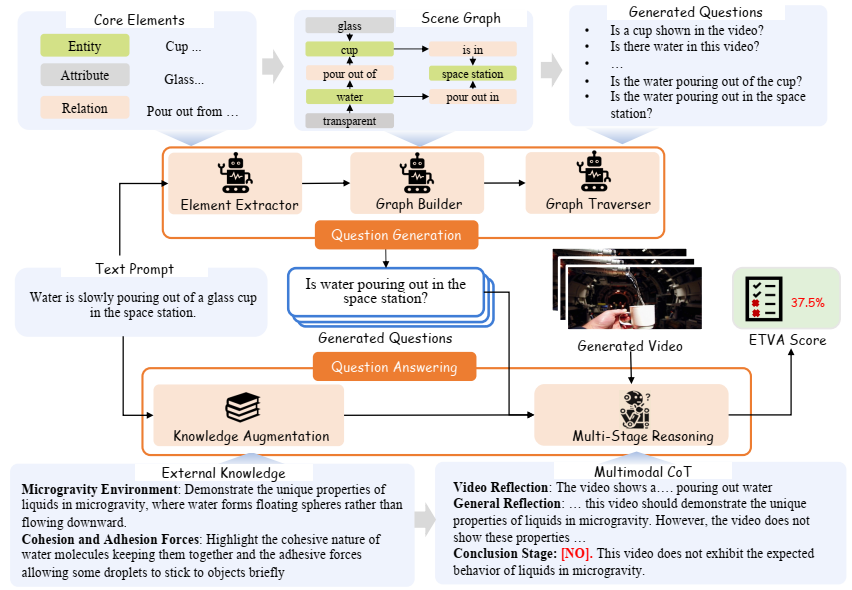
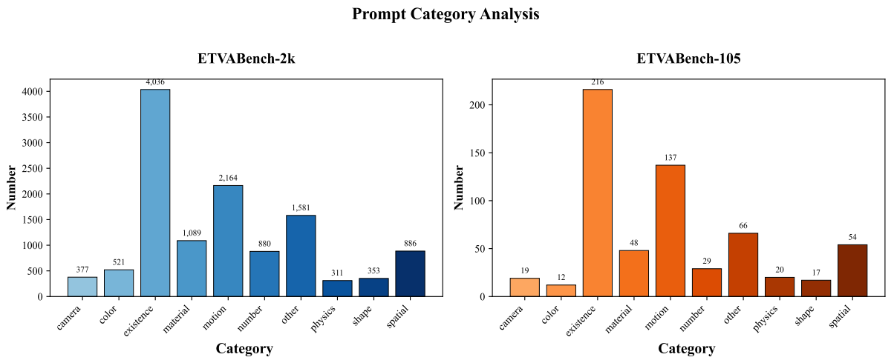
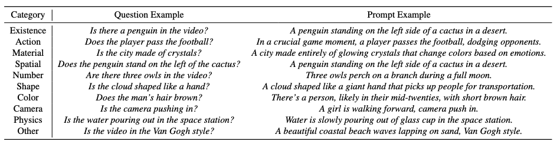

ETVA is a text-to-video alignment evaluation framework that provides fine-grained assessment scores highly consistent with human judgment.
Precisely evaluating semantic alignment between text prompts and generated videos remains a challenge in Text-to-Video (T2V) Generation. Existing text-to-video alignment metrics like CLIPScore only generate coarse-grained scores without fine-grained alignment details, failing to align with human preference. To address this limitation, we propose ETVA, a novel Evaluation method of Text-to-Video Alignment via fine-grained question generation and answering. First, a multi-agent system parses prompts into semantic scene graphs to generate atomic questions. Then we design a knowledge-augmented multi-stage reasoning framework for question answering, where an auxiliary LLM first retrieves relevant common-sense knowledge (e.g., physical laws), and then video LLM answer the generated questions through a multi-stage reasoning mechanism. Extensive experiments demonstrate that ETVA achieves a Spearman’s correlation coefficient of 58.47, showing much higher correlation with human judgment than existing metrics which attain only 31.0. We also construct a comprehensive benchmark specifically designed for text-to-video alignment evaluation, featuring 2k diverse prompts and 12k atomic questions spanning 10 categories. Through a systematic evaluation of 15 existing text-to-video models, we identify their key capabilities and limitations, paving the way for next-generation T2V generation.
ETVA contains a multi-agent framework for generating atomic questions and a knowledge-augmented multi-stage reasoning framework for question answering.
We construct ETVABench-2k for evaluating Open-Source Text-to-Video models and ETVABench-105 for evaluating Open-Source and Closed-Source Text-to-Video models. A question-driven classification method decomposes these prompts to 10 distinct categories.
 We visualize the evaluation results of 10 open sourced Text-to-Video models and 5 closed sourced Text-to-Video models across 10 dimensions on ETVABench-105.
We visualize the evaluation results of 10 open sourced Text-to-Video models across 10 dimensions on EFTVBench-2k.